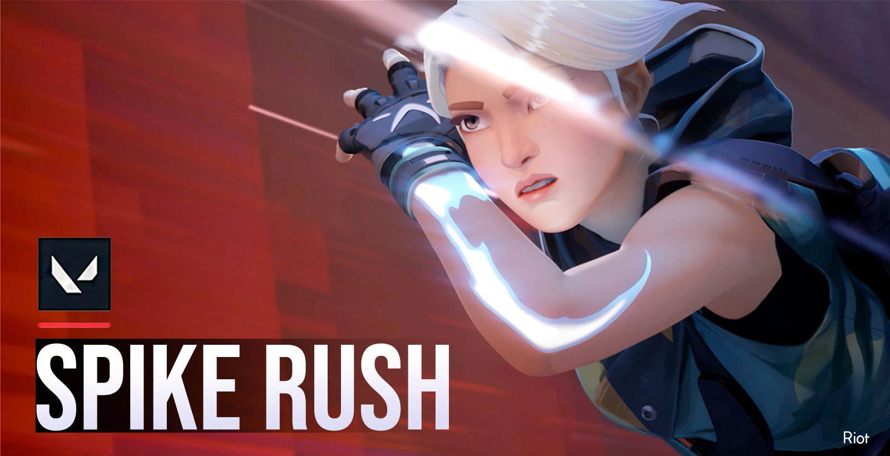
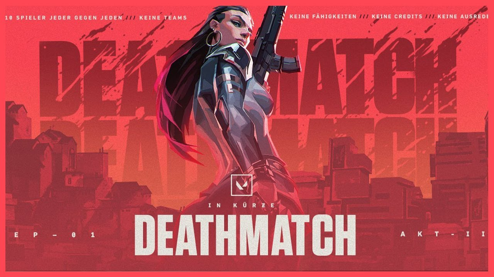
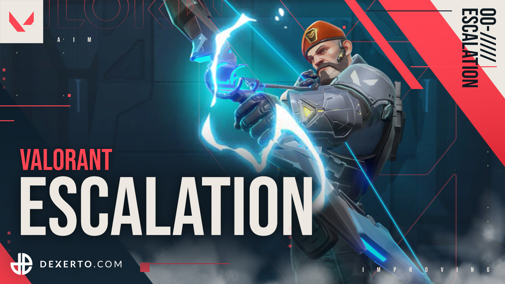

A versenymérkőzések ugyanazok, mint a rangsorolatlan meccsek, egy győzelem alapú rangsorolási rendszerrel egészül ki, amely minden játékoshoz rangot rendel 5 játszma után. Mielőtt versenyjátékokban játszhat, meg kell nyernie 10 minősítetlen mérkőzést. 2020 júliusában a Riot bevezette a „kettővel nyer” feltételt a versenymérkőzéseken, ahol ahelyett, hogy 12-12-kor egyetlen hirtelen halál kört játszanának, a csapatok felváltva játsszák a támadást és a védekezést a hosszabbításban, amíg egy csapat győzelmet nem szerez. kétmeccses vezetés. Minden hosszabbítási körben ugyanannyi pénzt kapnak a játékosok fegyverek és képességek vásárlására, valamint a végső képességdíj körülbelül felét. Minden kétfordulós csoport után a játékosok szavazhatnak úgy, hogy döntetlenre zárják a játékot. Az első szett után 6 játékosra, a második után 3 játékosra van szükség, és ezt követően csak 1 játékosnak kell döntenie. A verseny rangsorolási rendszere az Irontól a Radiantig terjed. A Radiant kivételével minden rangnak 3 szintje van. Az Immortal & Radiant a legjobb 500 játékos számára van fenntartva, ahol a rangjukhoz egy szám kapcsolódik, ami lehetővé teszi, hogy az első 500-ban szereplő játékosok rendelkezzenek egy mérőszámmal, amelyben összehasonlíthatják, hogyan helyezkednek el másokkal a saját szintjükön.
A normál, nem rangsorolt módban a mérkőzést 25 legjobbjaként játsszák – az első csapat, amelyik 13 fordulót nyer, nyeri a mérkőzést. A támadócsapatnak van egy bomba típusú eszköze, a Spike. Le kell szállítaniuk és aktiválniuk kell a Spike-ot a több meghatározott helyek (bombatelepek) egyikén. Ha a támadó csapat 45 másodpercig sikeresen megvédi az aktivált Spike-ot, az felrobban, mindent elpusztítva egy adott területen, és pontot kapnak. Ha a védekező csapat deaktiválni tudja a tüskét, vagy a 100 másodperces időmérő lejár anélkül, hogy a támadó csapat aktiválná a tüskét, a védekező csapat pontot kap. Ha egy csapat összes tagja kiesik a tüske aktiválása előtt, vagy ha a védekező csapat összes tagja kiesik a tüske aktiválása után, az ellenfél csapat kap egy pontot. Ha mindkét csapat nyer 12 fordulót, hirtelen halál következik be, amelyben az adott forduló győztes csapata nyeri meg a mérkőzést, eltérve a versenyszerű mérkőzések hosszabbításától. Ezen túlmenően, ha egy csapat 4 forduló után el akarja hagyni a mérkőzést, szavazatot kérhet a feladásra. Ha a szavazás egyhangú, a győztes csapat megkapja az összes győzelmet minden fordulóban, amely szükséges ahhoz, hogy elérje a 13-at, a vesztes csapat pedig vesztes kreditet kap. Egy csapatnak csak két lehetősége van megadni magát: az egyik támadóként, a másik pedig védőként.
A Spike Rush módban a mérkőzést 7 fordulóból a legjobban játsszák – az elsőként 4 menetet nyerő csapat nyeri a mérkőzést. A játékosok úgy kezdik a kört, hogy minden képességét teljesen feltöltötték, kivéve a végsőt, amely kétszer olyan gyorsan töltődik, mint a normál játékokban. A támadó csapat minden játékosa hord egy tüskét, de körönként csak egy tüske aktiválható. A fegyvereket minden körben véletlenszerűen választják ki, és minden játékos ugyanazzal a fegyverrel kezdi. A szabványos játékban megtalálhatóak a végső pontgömbök, de helyettük több bekapcsoló gömb is található.
A replikációs játékmód 2021. május 11-én indult. Az ügynökválasztás során a játékosok szavaznak arról, hogy melyik ügynökként szeretnének játszani. Az idő lejártával, vagy miután mindenki szavazott, a játék véletlenszerűen választja ki a játékos szavazatai közül az egyiket. Ezután az egész csapat ügynökként fog játszani, még akkor is, ha az egyik játékos nem oldotta fel az ügynököt. Ez a legjobb a kilencből, a játékosok a negyedik kör után oldalt váltanak. A játékosok előre meghatározott számú kredittel vásárolhatnak fegyvereket és pajzsokat. A képességek előre megvásárolhatók. A fegyverek és a pajzsok minden körben visszaállnak.
A Deathmatch módot 2020. augusztus 5-én vezették be. 14 játékos lép be egy 9 perces, mindenki számára ingyenes meccsre, és az nyeri a meccset, aki elsőként eléri a 40 ölést, vagy az a játékos nyeri meg a meccset, aki az idő lejártával a legtöbb ütést érte el. A játékosok egy véletlenszerű ügynökkel jelentkeznek, és minden képesség le van tiltva a puszta fegyveres játék során. Zöld egészségcsomagok minden öléskor csökkennek, ami a játékost maximális életerőre, páncélra és lőszerre állítja, kivéve, ha a játékos géppuskát használ, ami csak további 30 golyót ad a játékosnak.
A Snowball Fight játékmódot 2020. december 15-én adták ki. Ez egy Team Deathmatch játékmód, 50 öléssel kell nyerni. A képességek használata nem engedélyezett, és a játékosok véletlenszerű ügynökként jelennek meg. Az egyetlen elérhető fegyver a hógolyóvető, amely azonnali ölés, de lassú, és lövedékalapú ívet használ. Végtelen lőszer van. A játék során egy "portál" fog megjelenni, ajándékokat szállítva, amelyek mindegyike véletlenszerű bekapcsolást tartalmaz.
Az Escalation játékmódot 2021. február 17-én mutatták be, és hasonló a Counter-Strike-ban és a Call of Duty: Black Ops-ban található "gungame" koncepcióhoz, bár csapatalapú, nem pedig mindenki számára ingyenes, mindegyikben 5 játékos van. csapat. A játék 12 fegyverből véletlenszerűen választ ki, hogy végigmenjen. A többi fegyveres játék verzióhoz hasonlóan a csapatnak bizonyos számú ölést kell elérnie, hogy a következő fegyverre lépjen, és a fegyverek fokozatosan rosszabbodnak, ahogy a csapat áthalad rajtuk. Két nyerési feltétel van, ha az egyik csapat sikeresen végigmegy mind a 12 szinten, vagy ha az egyik csapat 10 percen belül magasabb szinten van, mint az ellenfél csapata. Csakúgy, mint a Deathmatch, a játékosok véletlenszerű ügynökként jelennek meg, nem tudják használni a képességeiket, mivel a játékmód tiszta fegyveres harcra van beállítva. Bár az olyan képességek, mint Sova sokkoló nyila, Raze boom botja és rakétavető, olyan képességek, amelyeket mindenki fegyverként használhat. Egy ölés után a zöld egészségcsomagok leesnek, ami a játékos egészségét, páncélját és lőszerét a maximumra tölti fel. A játékmódban az automatikus újraszületés is be van kapcsolva, így a játékosok a térkép véletlenszerű helyein jelennek meg újra.